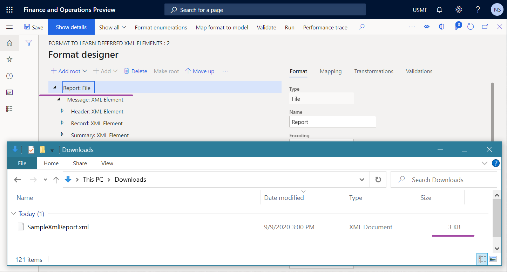
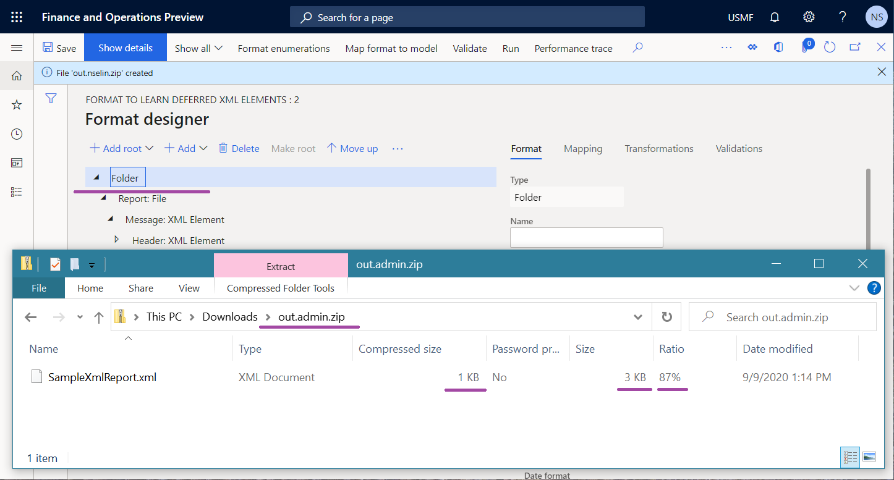

Komprimieren großer Dokumente, die in der elektronischen Berichterstellung generiert werden
[!include[banner](../includes/banner.md)]Sie können das Framework für die elektronische Berichterstellung (EB) verwenden, um eine Lösung zu konfigurieren, die Transaktionsdaten abruft, um ein ausgehendes Dokument zu generieren. Dieses generierte Dokument ist möglicherweise sehr groß. Wenn dieser Dokumenttyp generiert wird, wird der Speicher des Anwendungsobjektservers (AOS) zur Speicherung verwendet. Irgendwann muss das Dokument dann aus Ihrer Microsoft Dynamics 365 Finance-Anwendung heruntergeladen werden. Derzeit ist die maximale Größe eines einzelnen Dokuments, das in EB generiert werden kann, auf 2 Gigabyte (GB) begrenzt. Des Weiteren begrenzt Finance die Größe einer heruntergeladenene Datei derzeit auf 1 GB. Daher müssen Sie eine EB-Lösung konfigurieren, die die Wahrscheinlichkeit verringert, dass diese Einschränkungen überschritten werden und Sie eine Ausnahme Stream war zu lang oder Überlauf oder Unterlauf in der Rechenoperation erhalten.
Wenn Sie eine Lösung konfigurieren, können Sie Ihr EB-Format im Vorgangs-Designer anpassen, indem Sie ein Stammelement vom Typ Ordner hinzufügen, um den Inhalt zu komprimieren, der von einem der verschachtelten Elemente generiert wird. Die Komprimierung arbeitet „just in time“, sodass die maximale Speichernutzung und die Größe der herunterzuladenden Datei verringert werden können.
Note
Die Komprimierung nimmt einen zusätzlichen Prozentsatz der CPU-Auslastung in Anspruch.
Weitere Informationen zu diesem Ansatz erhalten Sie, wenn Sie das Beispiel in diesem Thema abschließen.
Beispiel: Komprimieren eines ausgehenden Dokuments
Dieses Beispiel zeigt, wie ein Benutzer, dem die Rolle Systemadministrator oder Funktionaler Berater für elektronische Berichterstellung zugewiesen ist, ein EB-Format konfigurieren kann, um ein generiertes Dokument zu komprimieren.
Voraussetzungen
Bevor Sie die Prozeduren in diesem Thema abschließen können, müssen die folgenden Schritte abgeschlossen werden.
- Aktivieren eines Konfigurationsanbieters.
- Importieren Sie die EB-Beispielkonfigurationen.
- Überprüfen Sie das importierte Format.
Note
Derzeit beginnt die Formatstruktur mit dem Element Bericht vom Typ Datei und enthält XML-Elemente. Daher wird ein ausgehendes Dokument im XML-Format generiert und es wird keine Komprimierung verwendet.
Generieren Sie ein EB-Format, um ein unkomprimiertes Dokument zu erhalten
Beachten Sie, dass die Größe des generierten Dokuments im XML-Format 3 Kilobyte (KB) beträgt.

Ändern des Formats, um die generierte Ausgabe zu komprimieren
- Wechseln Sie zu Organisationsverwaltung > Elektronische Berichterstellung > Konfigurationen.
- Erweitern Sie auf der Seite Konfigurationen die Konfigurationsstruktur für Modell zum Erlernen verzögerter Elemente.
- Wähle Sie die Konfiguration Format zum Verstehen verzögerter XML-Elemente aus.
- Wählen Sie Designer aus, um die Formatstruktur zu ändern.
- Wählen Sie auf der Seite Formatdesigner auf der Registerkarte Format die Option Stamm hinzufügen aus, um ein Stammformatelement hinzuzufügen.
- Wählen Sie im Dialogfeld Hinzufügen Verbreitet\Ordner aus.
- Wählen Sie OK aus, um das Hinzufügen des neuen Stammelements zu bestätigen.
- Wählen Sie Speichern aus.
Note
Die Formatstruktur beginnt mit dem Element des Typs Ordner. Dieses Element generiert eine Ausgabe als komprimierte Datei (ZIP-Format). Wenn ein Dokument, das vom Element Bericht generiert wird, in eine ausgehende ZIP-Datei eingefügt wird, wird sein Inhalt komprimiert, um die Größe der ausgehenden Datei zu verringern.
Generieren eines EB-Formats, um ein komprimiertes Dokument zu erhalten
Wählen Sie auf der Seite Formatdesigner die Option Ausführen aus.
Laden Sie die vom Webbrowser angebotene ZIP-Datei herunter und öffnen Sie sie zur Überprüfung.
Beachten Sie, dass die Größe des generierten Dokuments im ZIP-Format 1 KB beträgt.
Note
Die Komprimierungsrate der XML-Datei, die diese ZIP-Datei enthält, beträgt 87 Prozent. Die Komprimierungsrate hängt von den Daten ab, die komprimiert werden.

Note
Wenn das EB-Ziel für das Formatelement konfiguriert ist, das die Ausgabe generiert (in diesem Beispiel das Element Bericht), wird die Komprimierung der Ausgabe umgangen.
Zusätzliche Ressourcen
Überblick über die elektronische Berichterstellung (ER)